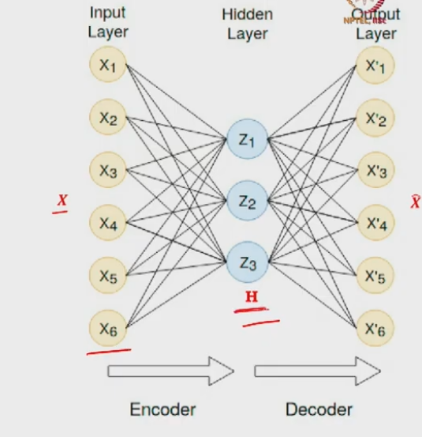
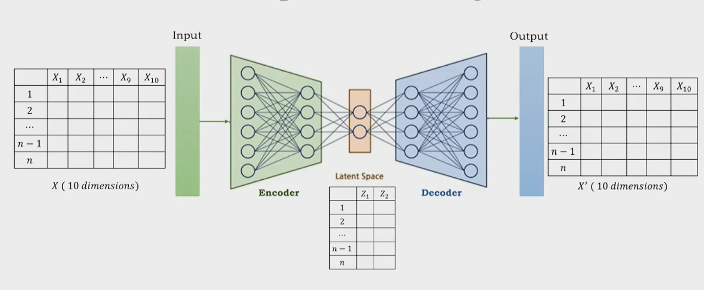

Training Objective: Reconstruction Loss
Mathematical formulation of the autoencoder, tied weights, activation functions, MSE and BCE loss, and regularisation.
This session derives the mathematical formulation of autoencoders and the reconstruction loss functions used during training. Starting from the encoder–decoder architecture, we formalise the weight matrices, derive the latent representation $h$ and reconstruction $\hat{X}$ algebraically, introduce the tied weight assumption, specify activation functions based on data type, and derive two loss functions — Mean Squared Error (MSE) for continuous features and Binary Cross-Entropy (BCE) for binary features.
1. Mathematical Formulation
1.1 Single-Hidden-Layer Architecture
For pedagogical clarity we consider a simple autoencoder with one hidden layer. The input $X$ passes through a single encoder hidden layer; the output of that layer is the latent representation $h$. This $h$ is then passed to a single decoder layer that produces the reconstruction $\hat{X}$.
1.2 Encoder: $h = g(X W_E)$
The latent representation $h$ is computed as:
$$h = g\!\left(X W_E\right)$$
where $g$ is the encoder activation function, $X$ is the input matrix, and $W_E$ is the encoder weight matrix. Bias terms are omitted for clarity but can be included in practice.
Dimension analysis (example). Suppose we have $n = 1000$ samples with $d = 6$ features each, so $X$ has shape $n \times d = 1000 \times 6$. The latent dimension is $k = 3$.
- $X$ dimensions: $1000 \times 6$
- $W_E$ dimensions: $6 \times 3$ (encoder maps 6 features to 3 latent features)
- $h$ dimensions: $1000 \times 3$ (same number of samples, reduced feature count)
The encoder weight matrix $W_E$ must have dimensions $d \times k$ to transform $X \in \mathbb{R}^{n \times d}$ into $h \in \mathbb{R}^{n \times k}$. This dimensional constraint is fundamental: $k < d$ ensures the latent code is a compressed representation that cannot trivially copy the input.

1.3 Decoder: $\hat{X} = f(h W_D)$
The reconstruction $\hat{X}$ is computed as:
$$\hat{X} = f\!\left(h W_D\right)$$
where $f$ is the decoder activation function and $W_D$ is the decoder weight matrix.
Dimension analysis:
- $h$ dimensions: $1000 \times 3$
- $W_D$ dimensions: $3 \times 6$ (decoder maps 3 latent features back to 6 features)
- $\hat{X}$ dimensions: $1000 \times 6$ (same number of samples, original feature count)
The decoder weight matrix $W_D$ has dimensions $k \times d$, reversing the encoder's compression. The reconstruction $\hat{X}$ should approximate $X$ as closely as possible: $\hat{X} \approx X$.

2. Tied Weight Assumption
2.1 Generic Setting vs. Tied Weights
In the generic setting, the model learns two independent weight matrices: $W_E$ for encoding and $W_D$ for decoding. This requires training twice as many parameters. However, a key observation simplifies the architecture: $W_E$ has shape $d \times k$ while $W_D$ has shape $k \times d$ — these shapes are transposes of each other.
This reduces the number of trainable parameters by approximately half, lowering model complexity and training time while still preserving the encoding–decoding capability.
Why tied weights work. The encoder compresses $X$ into $h$ via $h = g(XW)$, and the decoder reconstructs via $\hat{X} = f(h W^T)$. The transpose $W^T$ naturally has the correct shape $(k \times d)$ for the decoding operation. The values within the matrix are learned during training, and the same learned values are reused (transposed) for reconstruction. This is not an approximation — it is a valid architectural constraint that forces symmetric encoding and decoding behaviour.
2.2 Full Formulation Under Tied Weights
Under the tied weight assumption, the complete autoencoder mapping becomes:
$$h = g(XW), \qquad \hat{X} = f(h W^T) = f\!\left(g(XW) \cdot W^T\right)$$
The reconstruction $\hat{X}$ is a function of the input $X$, the single weight matrix $W$, and the two activation functions $g$ (encoder) and $f$ (decoder). Training now optimises only $W$ instead of both $W_E$ and $W_D$ independently.
| Property | Generic Setting | Tied Weight Setting |
|---|---|---|
| Weight matrices | $W_E$ and $W_D$ learned independently | Only $W$ learned; $W_D = W^T$ |
| Number of parameters | $\approx 2 \times d \times k$ | $\approx d \times k$ |
| Training complexity | Higher (two matrices) | Lower (one matrix) |
| Shape relationship | $W_E : d \times k$ ; $W_D : k \times d$ | $W : d \times k$ ; $W^T : k \times d$ |
3. Activation Functions
The choice of activation functions depends on the data type being reconstructed.
3.1 Binary Features: Sigmoid Output
When the input features are binary ($x_i \in \{0, 1\}$), the reconstruction must produce values in $[0, 1]$ so they can be interpreted as probabilities.
- Encoder activation $g$: ReLU or sigmoid — nonlinear activations that allow the encoder to learn non-trivial compressed representations.
- Decoder activation $f$: Sigmoid, defined as $\sigma(a) = 1 / (1 + e^{-a})$, which maps any real-valued input to $(0, 1)$.
The decoder output $\hat{X} = \sigma(h W^T)$ produces probabilities that approximate the original binary features. Values above 0.5 are interpreted as 1, values below 0.5 as 0.
3.2 Continuous Features: Linear Output
When the input features are real-valued (continuous), e.g. $x_i = 2.5, 7.3, 6.9, 11.4$, the reconstruction must also produce continuous values.
- Encoder activation $g$: ReLU, sigmoid, or tanh — any nonlinear activation that enables meaningful compression.
- Decoder activation $f$: Linear, defined as $f(a) = a$ (identity function).
A linear activation allows the decoder to produce any real value, essential for reconstructing continuous data. If sigmoid were used at the output, the reconstruction would be squashed into $[0, 1]$, which cannot approximate arbitrary real-valued features.
| Component | Binary Features | Continuous Features |
|---|---|---|
| Encoder $g$ | ReLU or sigmoid | ReLU, sigmoid, or tanh |
| Decoder $f$ | Sigmoid: $\sigma(a) = \frac{1}{1 + e^{-a}}$ | Linear: $f(a) = a$ |
| Output range | $(0, 1)$ — probabilities | $\mathbb{R}$ — unrestricted |
| Loss function | Binary Cross-Entropy | Mean Squared Error |
4. Reconstruction Loss: Mean Squared Error (MSE)
4.1 Per-Sample Error
For real-valued (continuous) features, the reconstruction loss uses Mean Squared Error. The ideal requirement is $\hat{X}_i = X_i$ for every sample, but in practice we aim for $\hat{X}_i \approx X_i$. The per-sample reconstruction error is:
$$\ell_i = \|X_i - \hat{X}_i\|^2 = \sum_{j=1}^{d} (x_{ij} - \hat{x}_{ij})^2$$
where $X_i = (x_{i1}, x_{i2}, \dots, x_{id})$ is the original input for sample $i$, $\hat{X}_i = (\hat{x}_{i1}, \hat{x}_{i2}, \dots, \hat{x}_{id})$ is its reconstruction, and $d$ is the number of features. Squaring the difference makes the error always positive (avoiding sign cancellation) and penalises larger deviations more heavily.
4.2 Average Loss Over All Samples
The total reconstruction loss over $n$ training samples is the average of per-sample errors:
$$\mathcal{L}_{\text{MSE}} = \frac{1}{n} \sum_{i=1}^{n} \|X_i - \hat{X}_i\|^2$$
Minimising $\mathcal{L}_{\text{MSE}}$ drives the autoencoder to produce reconstructions as close to the original inputs as possible, on average across the entire training set.
4.3 Expressing MSE in Terms of $W$
Substituting the tied-weight formulation:
$$\hat{X} = f\!\left(g(XW) \cdot W^T\right)$$
$$\mathcal{L}_{\text{MSE}} = \frac{1}{n} \sum_{i=1}^{n} \left\| X_i - f\!\left(g(X_i W) \cdot W^T\right) \right\|^2$$
The loss is expressed entirely in terms of the single weight matrix $W$ and the activation functions $f$ and $g$. The training objective is to find the $W$ that minimises this expression.
5. Regularisation
5.1 Why Regularisation Is Needed
Minimising $\mathcal{L}_{\text{MSE}}$ alone may yield a weight matrix $W$ with arbitrarily large or small entries. Large weights can reduce reconstruction error (by scaling the latent code), but they do not necessarily produce a meaningful or generalisable representation. Without constraint, the learned $W$ may overfit or produce representations that lack useful structure.
To ensure the weight matrix entries remain small, a regularisation term is added:
$$\mathcal{L}_{\text{reg}} = \mathcal{L}_{\text{MSE}} + \lambda \|W\|^2$$
where $\lambda$ is a small positive hyperparameter (e.g., $\lambda = 0.01$) and $\|W\|^2 = \sum_{i,j} w_{ij}^2$ is the squared Frobenius norm of $W$.
5.2 Optimised Weight Matrix $W^*$
After training completes, the optimisation process yields the optimised weight matrix $W^*$:
$$W^* = \arg\min_{W} \left[ \mathcal{L}_{\text{MSE}} + \lambda \|W\|^2 \right]$$
This $W^*$ simultaneously minimises reconstruction error and keeps weight magnitudes small. The consequences:
- Optimised latent code: $h^* = g(X W^*)$ captures the most important features of $X$.
- Optimised reconstruction: $\hat{X}^* = f(h^* W^{*T}) = f\!\left(g(X W^*) \cdot W^{*T}\right)$ is a close approximation of $X$.
6. Reconstruction Loss: Binary Cross-Entropy (BCE)
6.1 Per-Sample BCE Loss
When the input features are binary ($x_{ij} \in \{0, 1\}$), Mean Squared Error is inappropriate. Instead, Binary Cross-Entropy loss is used:
$$\ell_i = -\sum_{j=1}^{d} \big[ x_{ij} \log(\hat{x}_{ij}) + (1 - x_{ij}) \log(1 - \hat{x}_{ij}) \big]$$
where $x_{ij}$ is the original binary feature (0 or 1) and $\hat{x}_{ij}$ is the predicted probability (output of sigmoid, in $(0, 1)$).
6.2 Why the Negative Sign
The negative sign in BCE is necessary because the inner expression is always negative. Since $\hat{x}_{ij} \in (0, 1)$ (sigmoid output), $\log(\hat{x}_{ij}) < 0$ and $\log(1 - \hat{x}_{ij}) < 0$. Multiplying by $-1$ converts this into a positive loss, consistent with the optimisation convention that loss should be minimised toward zero.
6.3 Average BCE Over All Samples
The total BCE loss over $n$ training samples:
$$\mathcal{L}_{\text{BCE}} = -\frac{1}{n} \sum_{i=1}^{n} \sum_{j=1}^{d} \big[ x_{ij} \log(\hat{x}_{ij}) + (1 - x_{ij}) \log(1 - \hat{x}_{ij}) \big]$$
As with MSE, the regularisation term $\lambda \|W\|^2$ can be added to constrain weight magnitudes:
$$\mathcal{L}_{\text{BCE-reg}} = \mathcal{L}_{\text{BCE}} + \lambda \|W\|^2$$
The training objective is to find $W^* = \arg\min_W \mathcal{L}_{\text{BCE-reg}}$.
| Property | MSE (Continuous) | BCE (Binary) |
|---|---|---|
| Feature type | Real-valued ($x \in \mathbb{R}$) | Binary ($x \in \{0, 1\}$) |
| Per-sample loss | $\|X_i - \hat{X}_i\|^2$ | $-\sum_j [x_{ij}\log\hat{x}_{ij} + (1 - x_{ij})\log(1 - \hat{x}_{ij})]$ |
| Output activation | Linear: $f(a) = a$ | Sigmoid: $\sigma(a) = 1/(1 + e^{-a})$ |
| Ensures positivity | Squaring | Negative sign (log of probability is negative) |
| Regularised objective | $\mathcal{L}_{\text{MSE}} + \lambda \|W\|^2$ | $\mathcal{L}_{\text{BCE}} + \lambda \|W\|^2$ |
7. Architecture Choice: MLP vs. CNN
The autoencoder architecture depends on the input data type:
- Tabulated (structured) data: Encoder and decoder use MLP — fully connected (dense) layers. The input is a flat feature vector $X \in \mathbb{R}^d$, and the network compresses and reconstructs through successive dense layers with nonlinear activations.
- Image data: Encoder and decoder use CNN layers. The encoder applies convolutional layers to extract spatial features, producing a compressed feature map. The decoder uses transposed convolution (upsampling) layers to reconstruct the image from the latent representation.
8. Summary of Key Concepts
- Encoder: $h = g(XW)$ — compresses input into latent code.
- Decoder: $\hat{X} = f(h W^T)$ — reconstructs input from latent code (tied weights).
- Weight dimensions: $W \in \mathbb{R}^{d \times k}$; $W^T \in \mathbb{R}^{k \times d}$.
- Tied weight assumption: $W_E = W$, $W_D = W^T$ — halves trainable parameters.
- Binary features: Sigmoid at output; BCE loss; $\hat{x}_{ij} \in (0, 1)$.
- Continuous features: Linear at output; MSE loss; $\hat{x}_{ij} \in \mathbb{R}$.
- Regularisation: $\lambda \|W\|^2$ ensures small weight values, prevents overfitting.
- Optimised weight: $W^* = \arg\min_W [\mathcal{L} + \lambda \|W\|^2]$; yields $h^*$ and $\hat{X}^* \approx X$.
- MLP for tabulated data; CNN for image data.